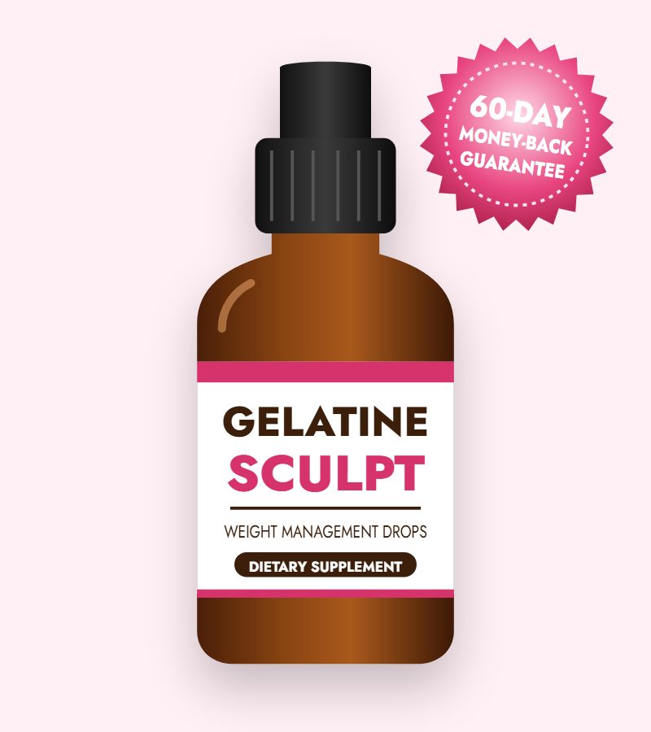
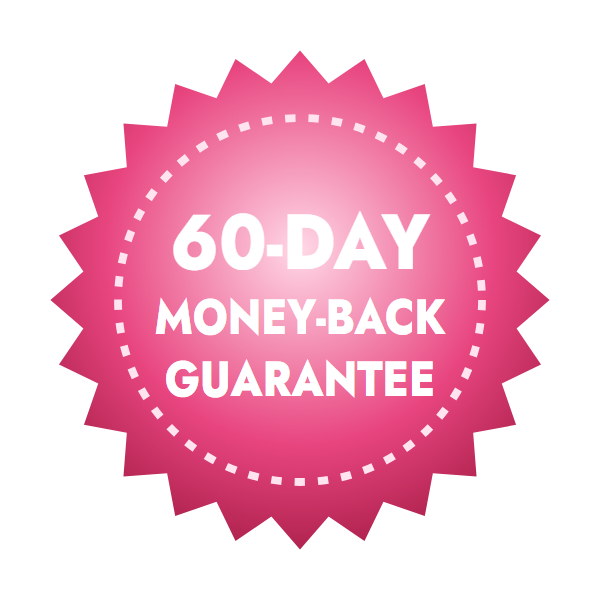
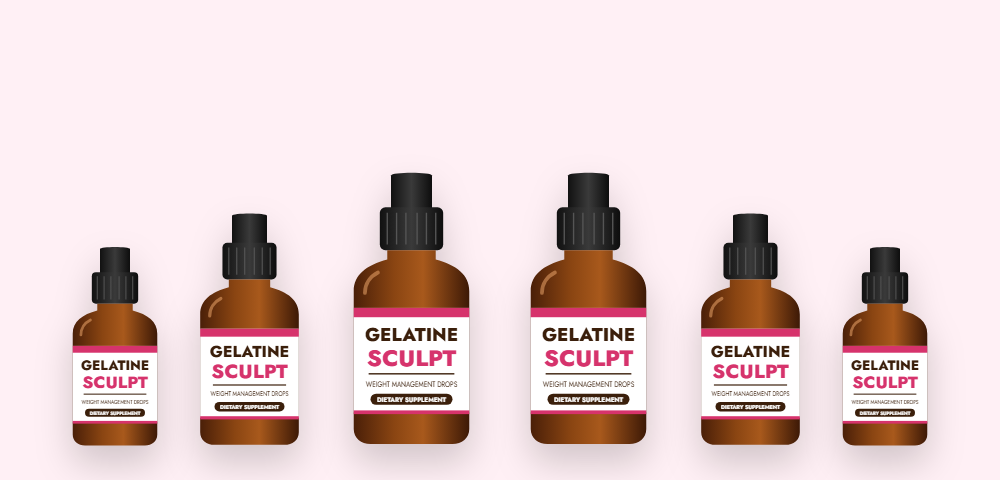

Supports Metabolism
Green tea extract contains catechins (such as EGCG) and natural caffeine, which have been studied for a small boost in calorie burning and fat use.*
An honest look at Gelatine Sculpt — ingredients, results, side effects, price and the official website

Gelatine Sculpt (also searched as GelatineSculpt or Gelatin Sculpt) is a liquid weight management supplement inspired by the viral gelatin trick. Instead of mixing and chilling gelatin every day, you take a dropper of Gelatine Sculpt each morning. In this review we break down what's inside, whether it works, who should avoid it, and how to buy from the Gelatine Sculpt official website.
Gelatine Sculpt is a dietary supplement that comes as liquid drops in a dark glass dropper bottle. It's designed for adults who want help managing their weight, cravings and energy without complicated diets. One bottle lasts roughly a month.
The formula has just four ingredients: green tea extract, pure gelatine, turmeric and berberine. Each one is a familiar ingredient in the wellness world, and together they target three common obstacles to weight loss — a slow metabolism, constant cravings and blood sugar swings.
The vendor markets Gelatine Sculpt as a ready-made version of the "gelatin trick" that went viral on social media, and even calls it a "bariatric jelly." The appeal is simple: instead of preparing gelatin at home every day, you take a quick dropper in the morning.
It's important to keep expectations realistic. Gelatine Sculpt is a supplement, not a medicine. It isn't a replacement for prescription weight-loss treatment, and it works best alongside balanced meals, enough sleep and regular movement.
The gelatin trick is a weight-loss trend that spread quickly on TikTok, YouTube and Facebook. People dissolve unflavored gelatin in hot water (sometimes with lemon or fruit juice), let it set into a jelly, and eat a portion before meals. Some videos nicknamed it "natural Ozempic."
The idea is that gelatin forms a gel in the stomach, takes up space and adds protein — so you feel fuller and eat less at the next meal. Protein is known to be more filling than carbohydrates or fat, and one small study found that a gelatin-based breakfast reduced hunger more than some other proteins.
The honest answer: it may help a little with fullness, but there's no strong evidence that the gelatin trick by itself causes meaningful weight loss. It does not work like prescription GLP-1 medicines, which are tested in large clinical trials. Where it helps most is as a low-calorie, high-protein snack that makes it easier to eat smaller portions.
Gelatine Sculpt takes the gelatin idea and adds three more ingredients — green tea extract, turmeric and berberine — that target metabolism, inflammation and blood sugar. It also replaces the daily preparation with a quick dropper. Whether that's worth the price compared with a homemade gelatin trick is something we compare later in this review.
Gelatine Sculpt weight loss support works on three fronts at the same time.*
Green tea extract contains catechins (such as EGCG) and natural caffeine, which have been studied for a small boost in calorie burning and fat use.*
Berberine supports steady blood sugar, and gelatine adds protein. Fewer blood sugar dips can mean fewer sudden cravings for sweets.*
Turmeric's curcumin has natural anti-inflammatory properties that may help you feel less puffy and more comfortable.*
The vendor claims Gelatine Sculpt "reactivates" GLP-1 and GIP — the gut hormones that newer weight-loss medicines copy. Berberine has been studied for effects on blood sugar and some metabolic markers, but no supplement has been shown to match the effect of prescription GLP-1 drugs. Think of Gelatine Sculpt as gentle support for appetite and metabolism, not a medical treatment.
Because the effects are gradual, consistency matters. Most people who see results from weight-loss supplements notice changes in cravings and energy first, and changes on the scale over the following months.
Four ingredients make up the whole formula. Here's what each one does and what the research says.
Green tea extract is rich in catechins, especially EGCG, plus a natural amount of caffeine. Studies of green tea catechins with caffeine show a modest increase in energy use and fat burning.*
The ingredient behind the gelatin trick. Gelatine is a protein made from collagen. It's rich in the amino acids glycine and proline and may help you feel full.*
Turmeric's active compound, curcumin, has been widely studied for its anti-inflammatory and antioxidant effects, which may support comfort and overall wellness.*
Berberine is a plant compound found in barberry and goldenseal. It has been studied for supporting healthy blood sugar and insulin sensitivity, and some studies note modest weight changes.*
The sales page doesn't list the exact amount of each ingredient. Check the supplement facts label on your bottle for full details.
Since gelatine is the star of Gelatine Sculpt and the gelatin trick, it's worth understanding what it actually is. (Gelatin and gelatine are the same thing — "gelatine" is the British spelling.)
Gelatin is a protein made by slowly heating collagen, the main structural protein in skin, bones and connective tissue. When collagen is partly broken down, it becomes gelatin, which dissolves in hot water and sets into a gel as it cools. Gelatin is almost pure protein and contains high amounts of glycine, proline and hydroxyproline.
Most gelatin comes from pig skin, cow hides and bones, and sometimes fish skin. That means standard gelatin isn't vegan or vegetarian, and it may not be halal or kosher unless the label says so. Plant-based "gelling" alternatives like agar-agar are different substances.
For most people, yes — in normal food amounts gelatin is safe and low in calories. Keep in mind that it's not a complete protein (it lacks the amino acid tryptophan), so it shouldn't replace other protein sources. People with allergies to gelatin, or who avoid animal products, should skip it.
Based on its ingredients, these are the main benefits Gelatine Sculpt is designed to support.*
By supporting metabolism and fullness, the formula can make it easier to eat smaller portions and lose weight gradually.*
Steadier blood sugar from berberine may reduce the afternoon and evening urge to snack on sweets.*
Green tea extract provides a gentle lift from natural caffeine and catechins.*
Turmeric supports a healthy inflammation response, which may help you feel less puffy.*
Gelatine supplies collagen-building amino acids that support skin as your body changes.*
Berberine is one of the most-studied natural ingredients for blood sugar and insulin sensitivity.*
Taking Gelatine Sculpt takes less than a minute. Based on the vendor's directions:
Results vary from person to person. Store the bottle in a cool, dry place with the cap tightly closed.
The vendor says no significant side effects have been reported, but every active ingredient can cause side effects in some people. Here's what to know before you start:
Talk to your doctor before taking Gelatine Sculpt if you take any prescription medicine — especially for diabetes, blood pressure or blood thinning — or if you have a medical condition. Stop using it and seek medical advice if you have any unusual reaction.
According to the vendor, Gelatine Sculpt is made in the United States in an FDA-registered facility. Note that the FDA registers facilities; it does not approve dietary supplements.
We looked at the formula, price, guarantee and the claims made in Gelatine Sculpt reviews and ads. Here's our honest assessment.
Gelatine Sculpt combines four reasonable ingredients for appetite, blood sugar and metabolism into a convenient daily dropper. It may help healthy adults who struggle with cravings, especially alongside better eating habits. It is not a natural Ozempic, and anyone taking diabetes or blood-thinning medicine should check with a doctor first. If you decide to try it, buy from the official website so you're covered by the 60-day money-back guarantee.
Visit the Gelatine Sculpt Official WebsiteIs Gelatine Sculpt better than making the gelatin trick at home? Here's how the options compare.
| Option | What it does | Typical cost | Main downside |
|---|---|---|---|
| Gelatine Sculpt | Gelatine plus green tea, turmeric and berberine in daily drops | $49–$79 per month | No trial on the full formula; medicine interactions |
| Homemade gelatin trick | Unflavored gelatin jelly before meals for fullness | A few dollars per month | Daily prep; only one ingredient; limited evidence |
| Prescription GLP-1 medicines | Medicines that copy appetite hormones | Often hundreds of dollars per month | Needs a prescription; nausea and other side effects |
| Stimulant fat burners | High-dose caffeine and stimulants | $30–$70 per month | Jitters, crashes, poor sleep |
Prescription medicines are proven in clinical trials; supplements are not a substitute for them. Ask your doctor what's right for you.
Search for "Gelatine Sculpt official website" and you'll find many sites that all claim to be the official store. Most are third-party sites with similar names or small misspellings. Some show prices or ingredient lists that don't match the real product. Here's how to make sure you're buying the real thing:
For the full guarantee and official bundle prices, order from the Gelatine Sculpt official website.
One bottle lasts about a month. Buying more bottles lowers the price per bottle, and every order comes with the 60-day money-back guarantee.
60-Day Supply · Basic
$79/bottle
List $217 · Save $59
180-Day Supply
$49/bottle
List $588 · Save $294
90-Day Supply · Good Value
$69/bottle
List $294 · Save $87
Prices checked on the official website on October 15, 2026 and may change. The vendor also offers free digital guides with some packages. One-time payment — no subscription.

Every order from the Gelatine Sculpt official website comes with a 60-day money-back guarantee from the date of purchase.
The vendor asks that you use the drops for at least 30 days to give them a fair try. If you're not happy with the results, contact customer support within 60 days of your purchase to request a refund.
Keep your order confirmation email, and contact support well before day 60. This guarantee only applies to orders from the official website — another reason to avoid third-party sellers.
Try Gelatine Sculpt Risk-FreeThe best place to buy Gelatine Sculpt is the official website, which offers the bundle discounts, free shipping on larger packages and the 60-day guarantee. Here's how to order:

Gelatine Sculpt is a liquid dietary supplement sold in dropper bottles. It combines four ingredients — green tea extract, pure gelatine, turmeric and berberine — and is marketed as a convenient version of the viral gelatin trick for weight loss.
Each ingredient has some research behind it for appetite, metabolism or blood sugar, but the finished Gelatine Sculpt formula has not been tested in a published clinical trial. It may help some people with cravings and energy, but results vary and work best with a balanced diet and regular activity.
The gelatin trick is a social-media weight-loss trend where people mix unflavored gelatin with water or juice, let it set, and eat it before meals to feel fuller. Gelatin is a protein, which can help with fullness, but the trick is not a medical treatment and does not work like prescription GLP-1 medicines.
Gelatine Sculpt is a real product sold through its official website, with a one-time payment and a 60-day money-back guarantee. Many look-alike websites also call themselves the official website, so check the address carefully and use a trusted link to place your order.
The Gelatine Sculpt official website is gelatinesculpt.com. Orders placed there get the bundle prices and the 60-day money-back guarantee. Sites with similar names or misspellings are run by third parties.
On the official website Gelatine Sculpt costs $79 per bottle for 2 bottles ($158 plus $9.99 shipping), $69 per bottle for 3 bottles ($207 with free shipping) and $49 per bottle for 6 bottles ($294 with free shipping).
According to the vendor, shake the bottle, take one to two droppers full by mouth and swallow, ideally in the morning before a meal. Do not take more than the label recommends.
Possible side effects include stomach upset or diarrhea from berberine and jitteriness from the caffeine naturally found in green tea extract. Berberine and turmeric can interact with medicines, including diabetes and blood-thinning drugs, so speak with a doctor first if you take medication, are pregnant or nursing, or have a health condition.
Berberine can lower blood sugar. If you have diabetes and take insulin or other glucose-lowering medicine, combining them could cause low blood sugar. Do not start Gelatine Sculpt without talking to your doctor first.
For most people gelatin is a safe, low-calorie protein. It provides amino acids such as glycine and proline and may help you feel full. It is not a complete protein, and it is made from animal parts, so it is not suitable for vegans or vegetarians.
Gelatine Sculpt listings appear on Amazon from third-party sellers. Those orders may not include the official bundle pricing or the 60-day money-back guarantee, which apply to orders from the official website.
Orders from the official website are covered by a 60-day money-back guarantee from the date of purchase. The vendor asks that you use the product for at least 30 days, then contact support within 60 days if you are not satisfied.
Get Gelatine Sculpt for as little as $49 per bottle with free shipping on the 6-bottle package — backed by a 60-day money-back guarantee.
Buy Gelatine Sculpt Now